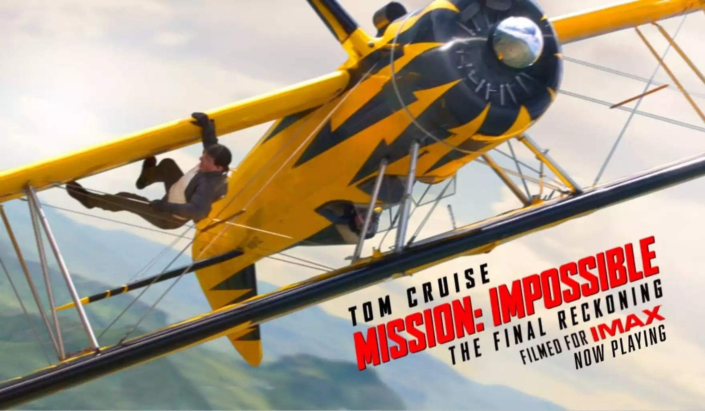

Mission Impossible: The Final Reckoning
Ethan Hunt and the IMF team continue their search for the terrifying AI known as the Entity - which has infiltrated intelligence networks all over the globe - with the world's governments and a mysterious ghost from Ethan's past on their trail. Joined by new allies and armed with the means to shut the Entity down for good, Hunt is in a race against time to prevent the world as we know it from changing forever
Movie Rating: (9.2/10)
Cast Members
- Tom Cruise as Ethan Hunt
- Ving Rahmes as Luther Stickell
- Haylay Atwell as Grace
- Simon Pegg as Benji Dunn
- Pom Klementieff as Paris
- Esai Morales as Gabriel